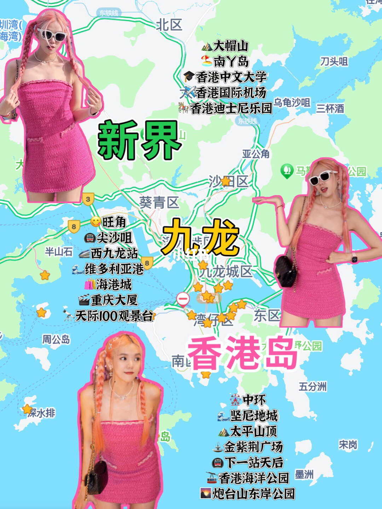
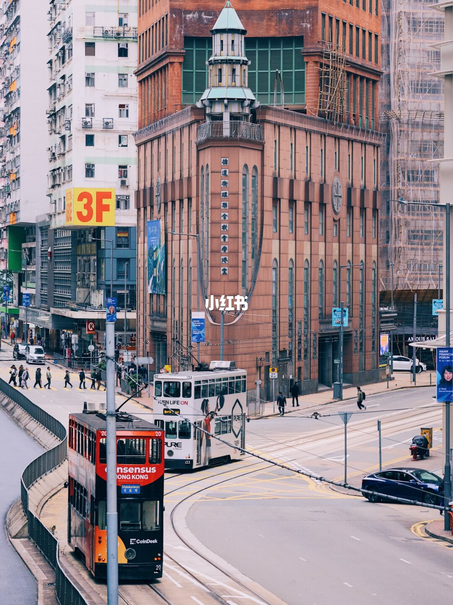
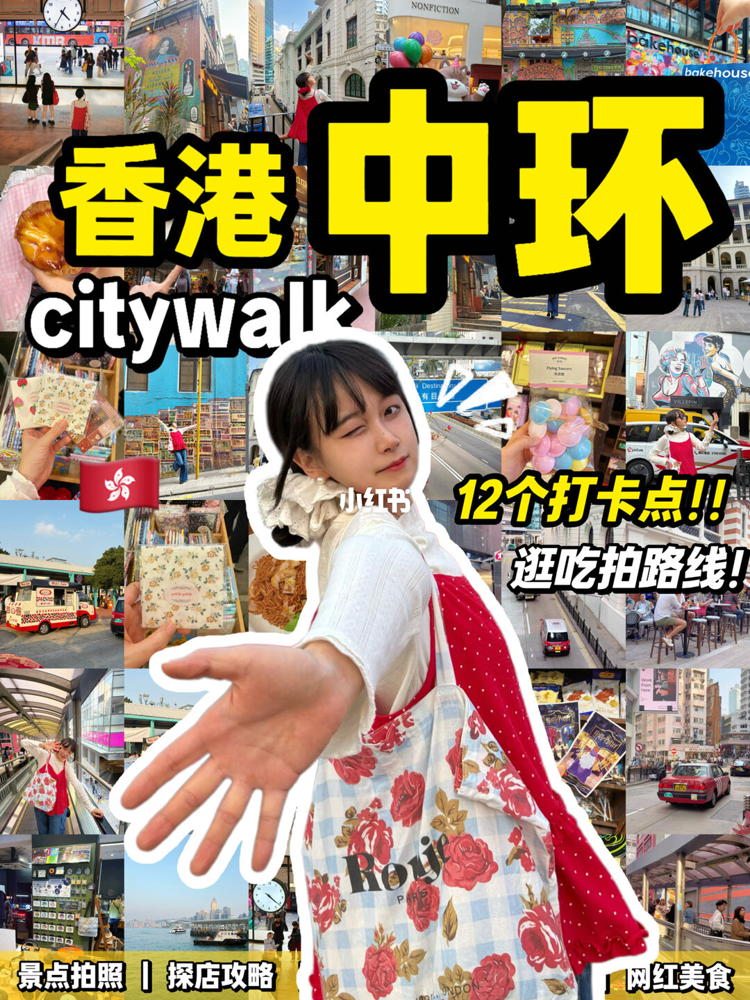
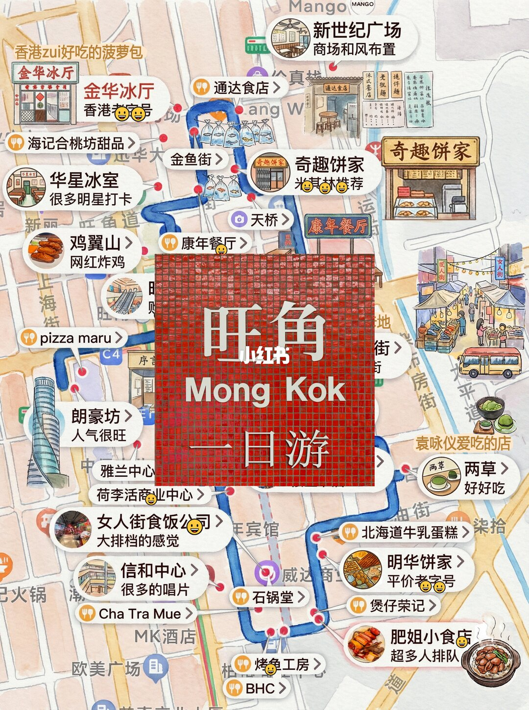
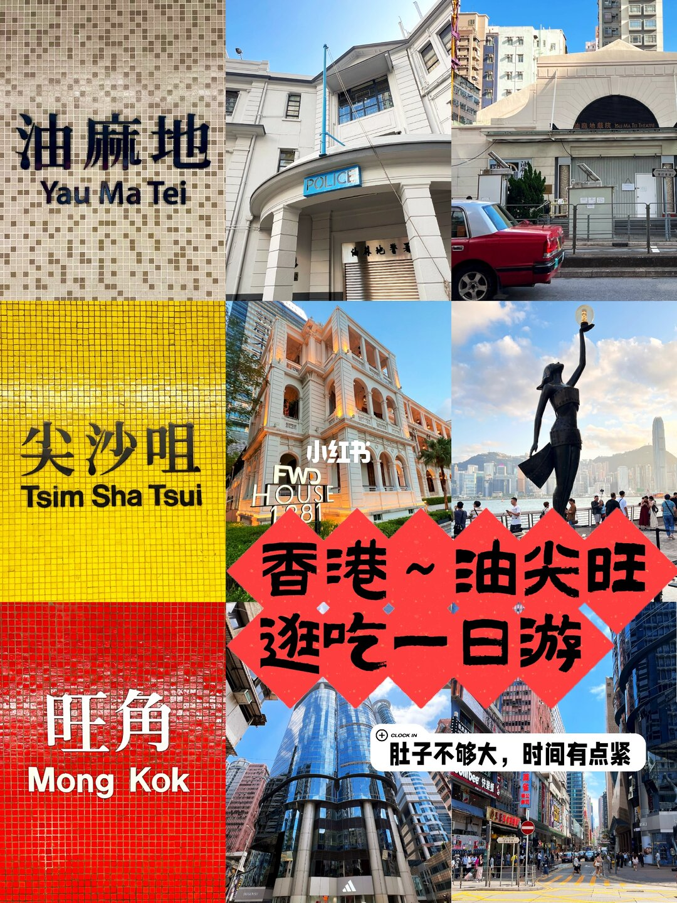
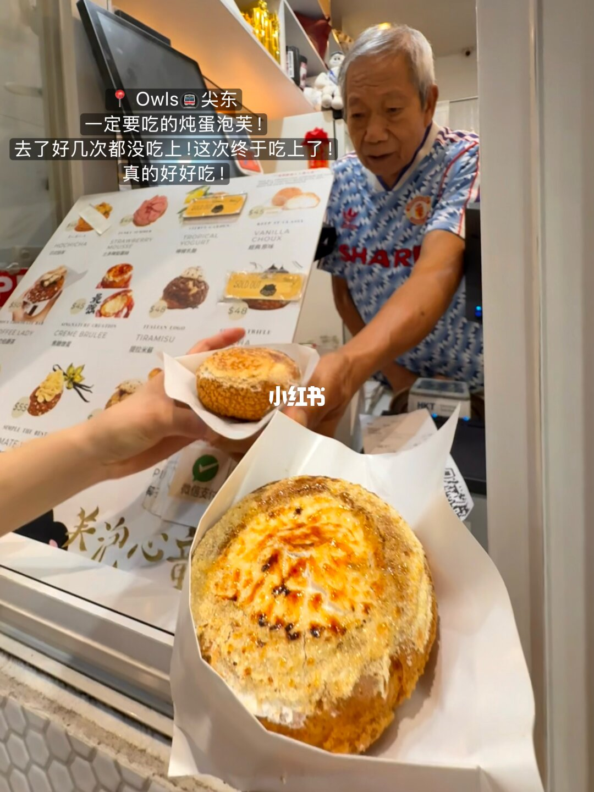
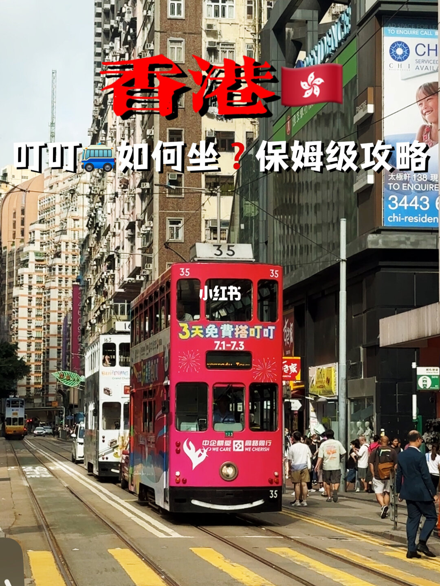

Day 1
西九龙文化区 -> 尖沙咀维港 -> 油麻地老街 -> 旺角扫街吃小吃。
Hong Kong 2-Day Guide
一套少绕路、好拍、好吃、适合第一次到香港的两日路线。白天看城市肌理，傍晚追维港和山顶夜景，热门店只做顺路选择。
西九龙文化区 -> 尖沙咀维港 -> 油麻地老街 -> 旺角扫街吃小吃。
中环历史街区 -> 大馆/半山扶梯 -> 叮叮车港岛线 -> 山顶或天星小轮夜景。
开通八达通，准备 HK$300 左右余额；频繁搭 MTR 可考虑游客全日通 HK$75/天。
先用香港做测试：地图标记景点、餐厅、小吃甜品和交通点；路线段给出建议交通，实时导航交给地图 App。
如果地图瓦片加载失败，下面的点位和路线文字仍然可用；实时路线请点击外部地图导航。
M+ 屋顶花园/免费公共区、艺术公园、维港西侧视角。想看展再买 M+ 或香港故宫票。
K11 MUSEA、星光大道、钟楼、1881 Heritage、海港城外侧海景。
午餐选十八座狗仔粉、麦文记/云吞面、太平馆餐厅；饭后可去佳佳甜品。
油麻地果栏、油麻地警署旧址、庙街周边。这里更适合拍街景，不建议拖行李。
旺角天桥、金鱼街、女人街、波鞋街、朗豪坊、信和中心。
金华冰厅菠萝油；肥姐小食店卤串；红豆烘焙/曲奇四重奏可做顺路补给。
回尖沙咀看夜景，或在庙街吃完再散步到海旁。体力不足就取消回海旁。
兰芳园/泰昌饼家/Bakehouse 选一个早餐点；别三家都排。
中环街市、半山扶梯、嘉咸街壁画、石板街、都爹利街。
大馆看历史建筑和展览公共空间，艺穗会红白外墙拍照。
九记牛腩/麦奀记/兰芳园；排队超过 25 分钟直接换备选。
中环坐叮叮车到湾仔/铜锣湾/天后，二楼后排看街景。
天气好去山顶；排队长就改坐巴士或回中环坐天星小轮。
从中环 7 号码头坐到尖沙咀，用最便宜方式补一个维港夜景收尾。
| 项目 | 轻松版 | 加展览/山顶 | 说明 |
|---|---|---|---|
| 交通 | HK$90-160 | HK$180-260 | 八达通最省心；游客全日通适合频繁过海/换线。 |
| 餐饮小吃 | HK$260-420 | HK$350-600 | 茶餐厅、小吃、糖水为主；正餐进餐厅会明显上升。 |
| 门票 | HK$0-70 | HK$190-556 | M+、香港故宫、Peak Tram 按需加入。 |
| 合计 | 约 HK$450-750 | 约 HK$750-1,100 | 不含住宿、机场交通和大额购物。 |
已下载到仓库内，作为路线气质和打卡风格参考。






